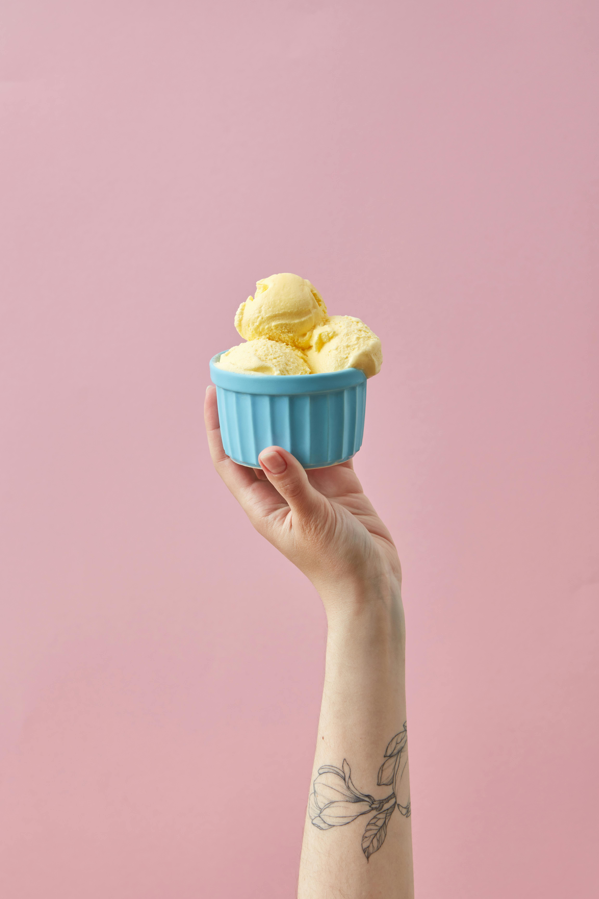

Homeade Vanilla Ice Cream

Indulge in the creamy goodness of homemade vanilla ice cream with this simple yet delightful recipe. With just a few basic ingredients and an ice cream maker, you can create a rich, velvety treat that's perfect for hot summer days or any time you crave a classic dessert. Customize it with your favorite mix-ins for a personalized touch.
Ingredients:
- 2 cups heavy cream
- 1 cup whoile milk
- 3/4 cup granulated sugar
- 1 tablespoon pure vanilla extract
- Pinch of Salt
Instructions:
Step 1: Mix Ingredients
- In a medium bowl, combine the heavy cream, whole milk, granulated sugar, vanilla extract, and a pinch of salt.
- Whisk the mixture until the sugar is completely dissolved.
Step 2: Chill The Mixture
- Cover the bowl with plastic wrap and refrigerate for at least 1 hour to ensure the mixture is very cold. For best results, chill it for 4 hours or overnight.
Step 3: Churn the Ice Cream
- Pour the chilled mixture into an ice cream maker and churn according to the manufacturers instructions. This usually takes about 20-25 minutes, depending on your ice cream maker.
- The ice cream is done when it has thickened to a soft-serve consistency.
Step 4: Freeze the Ice Cream
- Transfer the churned ice cream into an airtight container. Cover the surface with a piece of plastic wrap to prevent ice crystals from forming.
- Freeze for at least 2 hours or until the ice cream is firm.
Step 5: Serve
- Scoop the ice cream into bowls or cones and enjoy!
Tips:
- Optionally, serve with your favorite toppings such as chocolate syrup, sprinkles, fresh fruit, or nuts.
- For a creamier texture, let the ice cream sit at room temperature for a few minutes before scooping.
- You can customize this basic vanilla ice cream recipe by adding mix-ins like chocolate chips, crushed cookies, or fruit during the last few minutes of churning.
Enjoy your homemade vanilla ice cream!